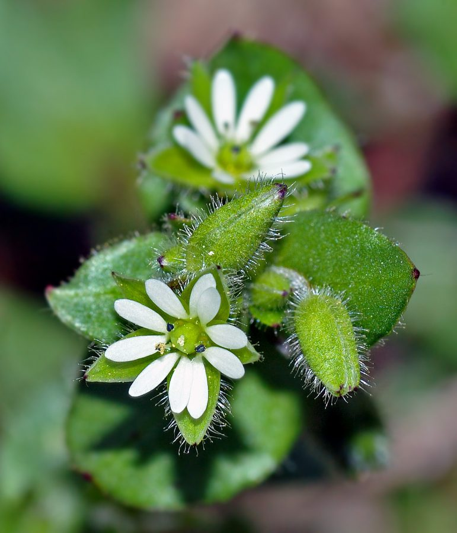

कॉमन चिकवीडCommon Chickweed
Stellaria media · Caryophyllaceae · FLR-0401

- Scientific name वैज्ञानिक नाम
- Stellaria media (L.) Vill.
- Family कुल
- Caryophyllaceae
- Hindi हिंदी
- कॉमन चिकवीड
- Local names स्थानीय नाम
- common chickweed, chickweed
- Status here यहाँ की स्थिति
- naturalized
- Movement आवागमन
- Resident, here all year
- Known from कहाँ दर्ज
- Others have published records from the wider Awadh–Purvanchal plain, none yet from Basti–Ayodhya अवध–पूर्वांचल से दूसरों के प्रकाशित अभिलेख, बस्ती–अयोध्या से अभी नहीं
- IUCN IUCN
- not evaluated
- Review समीक्षा
- not yet reviewed
When to look कब देखें
Expected mainly in January, February, March, November, December. मुख्यतः जनवरी, फ़रवरी, मार्च, नवंबर, दिसंबर में अपेक्षित।
Tell it apart from इनसे अलग पहचानें
कॉमन चिकवीड / Common Chickweed
Stellaria media (L.) Vill. — Caryophyllaceae
कॉमन चिकवीड — यह सर्दियों के दिनों में बगीचों, नम क्यारियों और छायादार स्थानों में जमीन पर फैलने वाला एक अत्यंत कोमल और हरा-भरा खरपतवार है। इसके कमजोर तनों पर एक महीन रोयेंदार रेखा चलती है। इसके छोटे सफेद फूल पाँच पंखुड़ियों वाले होते हैं, जो बीच से इतने गहरे कटे होते हैं कि दस पंखुड़ियों जैसे दिखते हैं।
Quick Identification त्वरित पहचान
| Feature | Description |
|---|---|
| Plant habit | Weak, flaccid, decumbent or procumbent bright green annual herb |
| Stems | Much-branched, cylindrical, marked by a single distinct longitudinal line of hairs |
| Leaves | Opposite, ovate or cordate-acuminate; lower petioled, upper sessile |
| Flowers | Small, white, solitary or in loose terminal leafy cymes |
| Petals | Five white petals, bipartite nearly to the base, appearing as ten petals |
| Fruit | Ovoid-oblong capsule opening by six valves, releasing tiny tubercled seeds |
Field tip: Look closely at the delicate green stem with a hand lens: it carries a single line of fine hairs that shifts sides at each successive node.
हिंदी: कमजोर और रसीले तने पर रोयें की एक अकेली धारी और गहरे कटे हुए छोटे सफेद फूल इसकी मुख्य पहचान हैं।
Morphology आकारिकी
Measurement not available in consulted sources.
A delicate, much-branched annual herb spreading over cool moist soil. Root system shallow and fibrous, easily uprooted. Stems weak, decumbent, ascending towards the apex, succulent, flaccid, bright green, glabrous except for a conspicuous single line of hairs running along the internode and alternating sides at each node.
Leaves opposite, simple, entire, light green, membranous; lower leaves ovate or subcordate, acute or shortly acuminate, borne on slender ciliated petioles; upper cauline leaves sessile or subsessile, ovate to lanceolate, glabrous except along the basal margins.
Flowers small, star-like, white, borne solitary in upper leaf axils or arranged in terminal leafy cymes on slender deflexed pedicels that become erect in fruit. Sepals five, green, ovate-lanceolate, obtuse or subacute, with scarious margins, glandular-hairy or nearly glabrous. Petals five, white, deeply two-cleft almost to the base, shorter than or scarcely equalling the sepals. Stamens varying in number, with reddish-violet anthers. Styles three.
Fruit an ovoid-oblong capsule exceeding the persistent calyx, splitting from the apex into six valves. Seeds numerous, minute, suborbicular, flattened, dark brown, covered with concentric rows of fine tubercles.
हिंदी: यह पौधा जमीन पर बिछकर बढ़ता है। पत्तियाँ आमने-सामने अंडाकार होती हैं। सफेद तारे जैसे फूल खिलते हैं और फलियों में गोल भूरे महीन बीज बनते हैं।
Behaviour & Ecology व्यवहार और पारिस्थितिकी
A widespread cool-temperate weed native to Europe and Eurasia, widely naturalized throughout northern India during the rabi season. It requires consistent soil moisture and cool temperatures, avoiding direct midday heat and drought. In the Gangetic plain, it carpets moist organic-rich silt under fruit orchards, around village wells, and in heavily irrigated kitchen gardens.
The species exhibits rapid vegetative growth, forming dense intertwining mats that shade the soil surface. Flowers open on bright sunny mornings and close during cloudy or rainy weather. Flowers are largely self-pollinated, ensuring high seed set even in early winter when insect activity is subdued.
हिंदी: यह पौधा ठंडी और नम जगहों को पसंद करता है। बगीचों की छाया और कुओं के पास यह जमीन पर हरी चादर की तरह बिछ जाता है।
Life Cycle / Phenology जीवन चक्र
Germination starts with the onset of cool nights in November and continues through January. Stem elongation and branching occur rapidly, with plants beginning to flower within a few weeks of emergence. Flowering extends from December through February.
Capsules mature quickly, dehiscing to cast hundreds of minute seeds onto the damp soil. By mid-March, as temperatures rise sharply, the shallow-rooted plants wither, turn yellow, and disintegrate completely. Seeds remain dormant throughout the hot dry summer and monsoon rains, protected by their hard tubercled seed coats.
हिंदी: नवंबर में बीज उगते हैं और तीन-चार हफ्तों में फूल आने लगते हैं। फरवरी तक बीज बनकर गिर जाते हैं और मार्च में गर्मी बढ़ते ही पौधा सूख जाता है।
Associated Species / Interactions सहजीवी प्रजातियाँ
Provides early winter nectar to small hoverflies, gnats, and tiny solitary bees. House sparrows, doves, and small granivorous birds avidly search chickweed patches for fallen seeds and tender leaves.
Frequently co-occurs in moist vegetable gardens with weeds such as bathua, lesser swine-cress, and creeping woodsorrel. Slugs and earthworms find humid shelter under its dense ground-hugging foliage.
हिंदी: गौरैया और अन्य छोटी चिड़ियाँ इसके बीज और कोमल पत्तियाँ बड़े शौक से खाती हैं। इसके नीचे केंचुओं को नमी मिलती है।
Pests and Diseases कीट और रोग
Aphids occasionally cluster on tender shoots during humid winter mornings. In excessively damp, overcrowded garden corners, dense mats are subject to damping-off fungi and white mold.
हिंदी: अत्यधिक गीली क्यारियों में तनों के सड़ने और सफेद फफूंद लगने की समस्या हो सकती है।
Agricultural / Human Relevance कृषि प्रासंगिकता
In eastern Uttar Pradesh, it behaves as a common minor weed of irrigated vegetable crops like cabbage, cauliflower, spinach, and garlic. Due to its shallow rooting, it is easily cleared by hand-hoeing (khurpi) and rarely damages established tall crops.
हिंदी: गोभी और पालक की क्यारियों में यह अक्सर उगता है, पर उखाड़ने में आसान होता है।
Expected Locally स्थानीय रूप से अपेक्षित
Not a field record. Written from published accounts for eastern Uttar Pradesh. No confirmed local sighting yet — if you have seen it, that is what the atlas needs.
अभी तक स्थानीय पुष्टि नहीं। यह विवरण प्रकाशित स्रोतों से है, किसी अवलोकन से नहीं।
Expected in damp shady vegetable patches, mango and guava grove edges, well drainage lines, and moist garden beds across Basti and Ayodhya from December through March. GBIF holds published records from the wider Awadh–Purvanchal plain, none yet from Basti–Ayodhya. The first verifiable record from the region will be a dated photograph of flowering plants or a population in a weed habitat or field border with district and coordinates.
हिंदी: बस्ती और अयोध्या के पुराने बगीचों और सब्जियों की नम क्यारियों में इसे सर्दियों के मौसम में देखा जा सकता है।
Distribution वितरण
Global range: Native to Europe and temperate Asia; today an almost cosmopolitan naturalized weed of temperate, subtropical, and highland agricultural lands.
In India: Naturalized throughout northern India, the Himalayas up to high altitudes, and the cooler plains during the rabi season.
In Uttar Pradesh: Common in the northern and eastern river plains in irrigated garden soils and grove understoreys.
In Basti district / eastern UP: Expected throughout the district in damp, shaded homestead soils and irrigated horticultural plots.
हिंदी: यूरोप और एशिया का मूल निवासी यह पौधा आज भारत के लगभग सभी ठंडे और नम मैदानी हिस्सों में पाया जाता है।
Research Questions शोध प्रश्न
- How do seedling emergence patterns of this weed respond to varying irrigation intervals in local winter vegetable plots?
- Does the presence of chickweed ground cover reduce evaporation loss from soil around vegetable rows in January?
- Which bird species in village backyards most frequently feed on its green leaves and mature seeds? / गाँव के आहातों में कौन सी चिड़ियाँ इसकी पत्तियाँ और बीज सबसे अधिक खाती हैं?
- What proportion of flowers produce seed through autonomous self-pollination compared to insect-mediated outcrossing? / कीटों की अनुपस्थिति में इसके कितने फूल स्वतः परागण से बीज बना लेते हैं?
- Can a child observe the single line of hairs on the stem under a magnifying glass and see it switch sides at each joint?
हिंदी: क्या यह खरपतवार क्यारियों की नमी बनाए रखने में मददगार है और इसके बीजों को स्थानीय चिड़ियाँ किस मात्रा में खाती हैं?
Similar Species मिलती-जुलती प्रजातियाँ
| Species | How to tell apart | हिंदी | |
|---|---|---|---|
| `[[bathua\ | Chenopodium album]]` | Erect mealy herb with alternate rhombic leaves and tiny greenish apetalous flower clusters | पौधा सीधा, पत्तियों पर सफेद चूर्ण और फूल हरे होते हैं |
Field rule: Look for the single line of hairs along the succulent green stem and the five white petals each split so deeply that they appear as ten.
हिंदी: तने पर बालों की एक अकेली लकीर और बीच से कटी हुई सफेद पंखुड़ियों को देखकर इसे पहचानें।
Taxonomy & Classification वर्गीकरण
Original description. First described as Alsine media by Carl Linnaeus in 1753 in Species Plantarum, volume 1, page 272. Transferred to Stellaria by Dominique Villars in 1789 in Histoire des Plantes de Dauphiné, volume 3, page 615.
Subspecies. Monotypic in northern Indian agricultural areas; the Stellaria media complex contains closely related polyploid taxa in temperate Eurasia.
Family and order placement. Placed in family Caryophyllaceae, order Caryophyllales. Characterized by opposite simple leaves with swollen nodes and deeply bifid petals.
Phylogenetic notes. Often placed in tribe Alsineae. Molecular analyses show it is closely related to alpine and circumboreal chickweeds.
IUCN status rationale. Not evaluated by the IUCN Red List. It is an exceedingly abundant and resilient cosmopolitan weed.
हिंदी: यह कैरियोफिलेसी कुल का सदस्य है। लिनियस के मूल नाम को विलार्स ने 1789 में स्टेलारिया जीनस में स्थानांतरित किया था।
Photo Gallery फोटो गैलरी
No photos yet — add field photos to media/species/common_chickweed/ and run node scripts/sync_photos.js.
Photos needed आवश्यक फोटो
- [ ] Delicate procumbent green stem showing single line of hairs (तने पर बालों की रेखा)
- [ ] White star-like flower showing deeply bifid petals (गहरी कटी पंखुड़ियों वाला सफेद फूल)
- [ ] Mat of foliage growing in shaded garden soil (छायादार जमीन पर फैला पौधा)
References संदर्भ
- Villars, D. (1789). Histoire des Plantes de Dauphiné, vol. 3, p. 615.
- Linnaeus, C. (1753). Species Plantarum, vol. 1, p. 272.
- Duthie, J. F. (1903). Flora of the Upper Gangetic Plain and of the Adjacent Siwalik and Sub-Himalayan Tracts, vol. 1, part 1, p. 66.
- Hooker, J. D. (1874). The Flora of British India, vol. 1, p. 230.
- Chopra, R. N., Nayar, S. L. & Chopra, I. C. (1956). Glossary of Indian Medicinal Plants, Council of Scientific and Industrial Research, New Delhi, p. 233.
- GBIF Occurrence Data — Stellaria media, India (2025).
Source file: species/flora/weeds/common_chickweed.md